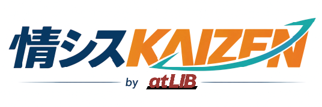
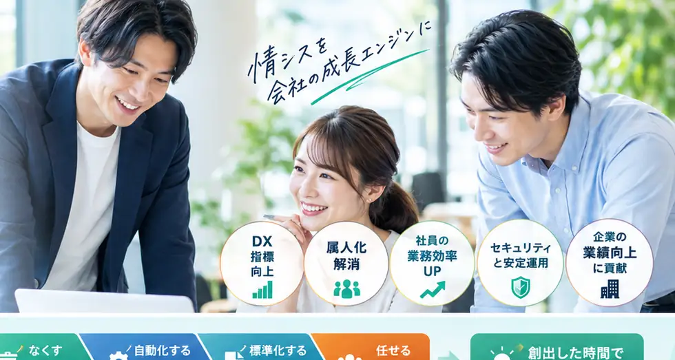

業種・企業規模を問わず、さまざまな企業のIT・情シスをご支援しています。

情シス代行・情シスBPOを、単なる人手補充で終わらせない。
業務を棚卸しし、「なくす・自動化する・標準化する・任せる」へ再設計。
本当に人が必要な仕事だけをBPOします。

業種・企業規模を問わず、さまざまな企業のIT・情シスをご支援しています。
けれど、増やす前に減らせる仕事があります。
PC・アカウント・SaaS対応で、改善や企画に手が回らない。
「その人しか分からない」が増え、退職や異動が事業リスクになる。
情シス人材は不足。採用しても、また新しい属人化が始まる。
Excel・メール・転記など、人がやらなくてよい作業が積み上がる。
改善・セキュリティ・IT戦略より、目の前の運用が優先される。
忙しすぎて、業務を整理して切り出す時間すら取れない。
そのまま移すのではなく、「本当に必要か」から見直す。それがatLIBの考え方です。
※数値はサービスの考え方を説明するためのモデルケースです。
BPOの前に、仕事そのものを変える。
不要な申請、二重入力、形骸化した帳票、過剰な承認をやめる。
AI・SaaS・API・スクリプトで、人がやらなくてよい定型業務を減らす。
個人の記憶を、手順・権限・ナレッジ・ルールという仕組みに移す。
それでも人が必要な業務だけを、atLIBのBPOチームへ移管する。
| 比較軸 | 業務代行を中心とするBPOの場合 | 情シスKAIZEN |
|---|---|---|
| スタート | 任せる業務を決める | 何を任せるかから一緒に考える |
| 現状業務 | そのまま移管 | 必要性から見直す |
| 非効率業務 | 代行する | なくす・自動化する |
| 属人業務 | 担当者へ移管 | 標準化して仕組みへ移管 |
| KPI | 対応件数・SLA | 削減時間・自動化・標準化＋SLA |
| ゴール | 安定したBPO | 人に依存しない情シス |
※サービスによって提供範囲は異なります。本表は、業務代行を主目的とする場合との考え方の違いを示したものです。
現状・課題をヒアリング
業務量・頻度・担当・属人化を可視化
なくす・自動化・標準化・任せるへ分類
手順、権限、SLA、ナレッジを整備
運用しながら仕事を減らし続ける
運用データから次のカイゼンへ。BPOして終わりではなく、運用するほど仕事が減っていきます。
定型業務だけでなく、情シスの役割そのものを広く支援します。
情シスだけをラクにするサービスではありません。
社員の仕事を止めない。情シスに改善時間を戻す。その結果、会社全体の生産性を上げる。
削減時間、自動化、標準化、改善候補まで、経営と情シスが同じ指標で確認できます。
※表示値はレポート様式を説明するためのサンプルです。
人月売りではなく、情シス機能と責任範囲を基準にした5つのプラン。
※対象範囲・件数・SLA・オンサイト条件により変動します。詳細はお見積もりにてご案内します。
何人・何時間と決める必要はありません。
導入初期や必要なタイミングで現場に入り、実際の仕事を見ながら業務を掘り起こします。
はい。むしろ、その状態から始められることが本サービスの特徴です。ヒアリングと業務棚卸しから、外注すべき業務・自動化すべき業務・社内に残す業務を整理します。
アカウント管理、SaaS運用、入退社、資産台帳、定型問い合わせなどはリモート中心で対応可能です。物理対応や現地確認が必要な場合はオンサイトOptionを組み合わせます。
はい。社内情シスを置き換えるだけでなく、定型運用をatLIBへ移し、社内担当者がDX・セキュリティ・企画へ集中するための利用も想定しています。
はい。運用データをもとに削減時間、自動化、標準化、改善候補などを継続的に可視化し、次のカイゼンにつなげます。
必要に応じて個別設計します。ただし本サービスは、常駐人数そのものを価値にするのではなく、標準化・共有化・リモート運用によって人への依存を減らすことを基本思想としています。
まずは無料の情シスKAIZEN診断で、現状を一緒に可視化することから始めます。
担当者との60分の対話で、御社にとって最適な情シス運営体制の仮説をご提示します（この場では診断結果は表示されません）。
まずは2〜3分の事前アンケートにご回答ください。
内容を確認のうえ、担当者より日程調整のご連絡をします。
送信いただいた内容は、診断のご案内とご連絡のみに利用します。
atLIB 情シスKAIZENは、情シスBPO・情シス代行の前に業務棚卸しを行い、 不要業務の廃止、ITによる自動化、属人業務の標準化を進めます。 そのうえで必要な運用だけをBPOすることで、社内情シスがDX、セキュリティ、IT戦略に集中できる状態をつくります。